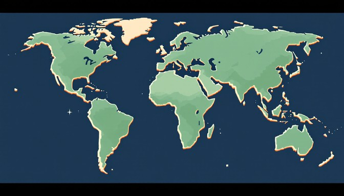

Our Projects
Since 2020, Seed it Through has planets over 5,000 trees across the 32 counties in Ireland. We are committed to restoring hope and prosperity in underdeveloped communities by planting and growing trees where are required the most. We believe everyone has the right to access the beauty nature brings us. With over 200+ volunteers, we are one of Ireland's many non profits. We are the proud winners of the 2025 Ireland excellence awards for 'Best sustainability non profit organisation.'
Join Our Mission
At our heart, we understand that trees change lives. In socio economic disadvantaged areas, the lack of diverse greenery contributes to poor mental health, soil erosion and limited opportunities. We are on a misson to change that! We aim to scale our operations by 200% by 2028.
Send us an Email Today!Who we are
We aren’t just about the trees, we are about serving the people who need it the most! We work side by side with schools, men’s sheds and local communities. Each tree brings us a small bit closer.
